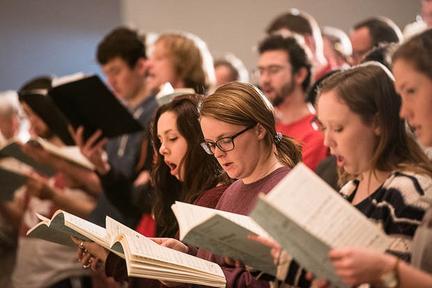
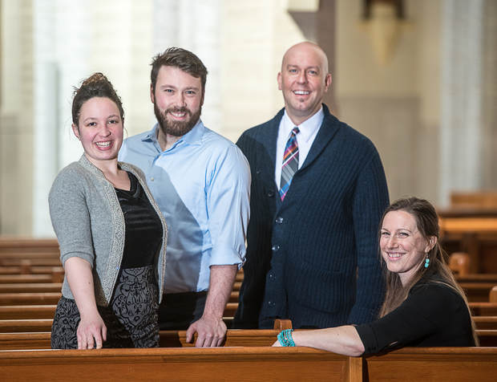
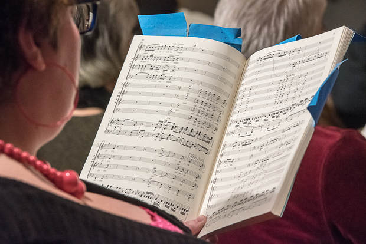
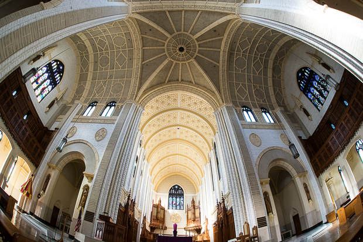
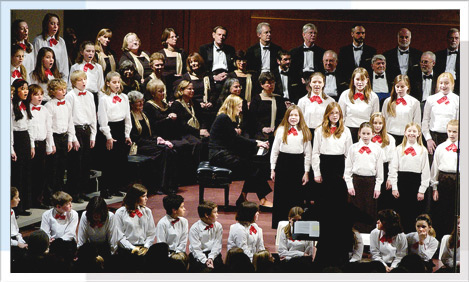

Previews & Reviews Archives
2015 - 2016 Season
Music on a huge scale in a majestic venue
Julie-Ann Baumer, a
Special to the Sun Journal
bPlus | Sunday, March 27, 2016
After years of planning and months of rehearsals, 200 voices and 65 instruments will bring Beethoven's most demanding choral piece to life in the basilica.
On Sunday, April 3, the Basilica of Saints Peter and Paul will be filled with a 65-piece orchestra and close to 200 voices. The audience will assemble to listen to two Beethoven works, one considered by some scholars to be the most difficult piece of choral music ever written. For Artistic Director John Corrie and the Maine Music Society’s Board of Directors, this single performance will be a culmination of almost three years of discussion, planning and collaboration. For the singers, the performance will be the highlight of four months of grueling practice. For the audience, a sublime distillation of thousands of hours of practice will result in what promises to be an intoxicating musical elixir meant to fill the basilica and the audience with a sense of wonder.
The musicIn 1819, Archduke Rudolf of Austria was appointed archbishop of Olomouc in what is now the Czech Republic. As a young man, Rudolf had studied music with Beethoven. The two men remained friends and Rudolf became Beethoven’s patron and commissioned him to compose a Mass for his consecration as archbishop. Beethoven immersed himself in the work, almost to the point of obsession. As the September 1819 consecration Mass approached, it became evident Beethoven’s work was incomplete. Totally deaf at this point in his life, Beethoven continued to wrestle with the "Missa Solemnis" until 1823. It would not be performed publicly until 1824.
The character of the piece changed and expanded during the years Beethoven perfected it. In accordance with the liturgy of the Catholic Mass, the "Missa Solemnis" (Latin for “solemn mass”) consists of five movements: the Kyrie, the Gloria, the Credo, the Sanctus and the Agnus Dei.
By the time it was first performed, the five movements remained intact but the piece itself had outgrown the structure of the Catholic Mass. Requiring a large chorus, trained soloists, a full orchestra and a sufficiently large space limited the available venues and groups to perform it. As a result, it is one of Beethoven’s lesser-known and least-performed works.
The other work to be performed at the concert will be a much shorter cantata, also by Beethoven, to warm up the crowd and the performers.
The singers

So who are these hardy singers who have undertaken such a complicated piece of music? Of the five choirs assembled for the event — totaling nearly 200 voices, including four professional soloists — the "host" choir will be the Maine Music Society Chorale. Its members come from all over Maine, some of them traveling at least an hour to get to weekly practices. There are small business owners, social workers, design engineers and insurance underwriters in the mix with retired or semi-retired pastors, teachers and accountants. Some members are in their first or second year with the group, while others are in their first, second or third decade. Regardless of where they’re from, what they do or how long they’ve been doing it, these members share a common passion — they love singing.
Rick Rau of Turner, a member since 1983, says “making music helps to make sense of things in a crazy, disjointed world. It brings people together from all walks of life for one purpose.”
For Audrey Machowski of Wales, a member of the Saints Peter and Paul Schola Cantorum — another of the choirs participating — not only does she work full time, but she and her husband are training for repeat participation in the Boston Marathon. She admits time is sparse and the complexity of the piece was overwhelming in the beginning. “I was ready to throw in the towel,” she says. “The piece is incredibly difficult for many reasons, not only the intricacy, but the range. I’m an alto and Beethoven doesn’t understand that we don’t like to sing notes that are so high.” But she’s stuck with it and credits the group rehearsals as a key to keeping her inspired.
Claude Bergeron, a Lewiston native who once played bass in a local garage band called “Disturbance of the Peace,” says singing is an emotional experience and he has to separate himself “emotionally from a piece while I’m singing, because it is difficult to sing if you let the music overtake you.” He explains: “Musicians feel emotion in the progression of certain chords along with the dynamic shift of the musical passage. . . . To put it another way, think of Roger Daltrey screaming ‘Yeah . . .’ before he sings ‘meet the new boss, same as the old boss,’ or Bruce Springsteen wailing mournfully at the end of 'Jungleland.' Beethoven, rock 'n' roll, it’s the same to me.”
Christine Koch, a recently retired literacy specialist, has driven the hourlong commute from South Portland to perform with the chorale for the last 20 years. “There’s something about making music with others that is like nothing else in my life,” she says. “Since I began, the chorale has consistently grown in size, skill and repertoire. How can I keep from singing?”

The singers at the production will represent five choirs: The Maine Music Society Chorale, the Bates College Choir, the Edward Little and Lewiston high schools' chamber choirs and the Basilica's Schola Cantorum. They will sing with the Maine Music Society Orchestra and Bates College Orchestra.
Practice makes perfect

So they’ve got passion and talent. Is it enough to rise to the challenge of the "Missa Solemnis"?
According to Susan Trask, Maine Music Society Chorale member and Maine Music Society Board member, each singer has “had to prepare on their own” as well as in regularly scheduled group practices. Since January, the members of the Maine Music Society Chorale, the Bates Choir and the Basilica Schola have had weekly combined practices, which generally run for two-and-a-half hours, as well as some sectional practices, such as “all tenors.”
The Maine Music Society website has a member’s portal where recorded practice tracks are posted weekly. These tracks play the individual part from one speaker and the full chorale part from the other speaker and members can use this method to practice daily.
Because "Missa Solemnis" is such a complicated piece of music, singers knew they would need to do significant amounts of self-directed practice. Says Bergeron: “I have been practicing 20 minutes per morning before going to work and 90 minutes after work” as much as possible. Bergeron says he’s been using the Maine Music Society portal as well as another choral website called “Cyber Bass.”
Other members, including Jean Bass of Bridgton, also practice at their home piano, “sometimes pounding my part out, sometimes playing one of the other parts and trying to sing my part against it.”
Eventually after weeks of practice, the music becomes part of the singer. Bass says “at some point . . . I discover that the music is becoming my daily ear-worm, and I find myself randomly whistling or humming short passages over and over. That’s when I know it’s starting to become part of me.” She confesses to waking up at 4 a.m. with a random passage in her mind and she is relieved “to realize it’s working its way into my being.”
Maestro John Corrie
The event is being led with grace and vitality by “The Maestro.” Artistic Director John Corrie is now in his 10th season heading the Maine Music Society. He is beloved by the singers for his musicianship, humor and kindness. Says singer Christine Koch: “I wish the audience could watch John from the perspective of the performers. He has incredible energy.” Adds Jean Bass: “If he asked it of us, we’d do back flips off the risers.”
He didn’t ask for any back flips at a recent Saturday practice at Bates College's Olin Arts Center, but Corrie’s humor was evident when he reminded singers to “exaggerate your R’s” and “pronounce your K’s more” in a break between movements. “It’s like me playing Scrabble” he joked. “All I get is vowels. Make the consonants!” Everyone laughed and the next movement began with a decidedly louder emphasis on the consonant sounds.
Susan Trask says Corrie is “very much involved in all the details of production and the nitty-gritty.” Corrie professes to use no magical musical software to organize the project. “I am very low-tech and use standard yellow, lined 8-and-a-half-by-11-inch paper. I keep everything in a three-ring notebook titled ‘The Beethoven Project.’”
Working with a small group of Maine Music Society members and Bates College staff and faculty, he oversees a general project plan and outline that includes a steady stream of e-mails, phone calls and meetings, in addition to rehearsing with the choirs and orchestras. Plus, he traveled as far as New York to audition one of the four soloists.
With such a vast array of details to oversee, how will Corrie know that everything is coming together? “It already is,” he said confidently after the first combined choral practice on March 12. The practice was “an indication of the success of the collaboration of the choirs,” he continued, “and including the soloists in that rehearsal helped the choir singers to appreciate the total picture.”
The Basilica

The massive size of the Basilica of Saints Peter and Paul makes it perfect for the "Missa Solemnis," and it has good acoustics, too. “The plaster pillars, because they are porous, absorb some of the sound and prevent” excess reverberation,” says Scott Vaillancourt, director of music for Prince of Peace Parish as well as the Schola Cantorum. “These types of acoustics are good for a highly polyphonic piece like the 'Missa.'” No amplification will be required.
“What I have told my friends when inviting them to this concert is that this is an opportunity to witness classical music on a huge scale in a majestic venue," says Bergeron. "If you have not been to a classical performance before, this is the one to attend. For those who have never been inside the basilica, which is THE prominent landmark and cultural touchstone of Lewiston, this concert will be an incredible way to experience a place where generations passed through to worship and to celebrate the milestones in their lives.”
The basilica’s capacity for this performance will be 1,200 seats; the last Maine Music Society performance approaching this size and scope was Brahms' Requiem, done eight years ago to a sell-out crowd.
What to expect
So maybe you’re intrigued that such a complex and incredible event is taking place minutes from your home, and in such an incredible setting no less. What can you expect to hear?
The event will begin with a performance of Beethoven’s Opus 112, an 8-minute cantata based on verses by the German poet Goethe. Although brief, this work, performed in German, will include both the Lewiston and Edward Little high school chamber choirs in addition to the Maine Music Society’s Chorale and Orchestra, the Bates College Choir and Orchestra, and the Basilica’s Schola Cantorum.
Following the “Meeres Stille,” the "Missa Solemnis" begins with the Kyrie, or “Lord Have Mercy.” This opening movement, approximately 10 minutes in length, leads into the exuberant and joyful “Gloria.” This movement includes a heart-wrenching cry for mercy six minutes into the movement. When a long pause seems to signal that the “Gloria” is over, a more glorious “Gloria” erupts with the basses beginning a gorgeous fugue.
The third movement, “Credo” (or The Creed), is the longest of the five. Audience members should be waiting for the dramatic pause in the middle of the movement, followed by the tenors exploding with the line that translates to “on the third day he was resurrected from the dead.” The fourth movement, Sanctus, includes an exquisite violin solo. The fifth and final movement, Agnus Dei, includes a beautiful dialogue between the soloists and the choir. The piece ends very quietly with an understated “Dona Nobis Pacem” (grant us peace) and clocks in at just under 85 minutes.
For performers like Jean Bass, singing the "Missa Solemnis" is the musical equivalent of a hike she and her husband took up Mount Chocorua in New Hampshire. “Ever since, when we drive down Route 16 we look at it and say ‘We've done that!’ and it's the mountain against which we measure other hikes.”
Listeners fortunate enough to attend next Sunday's performance will have the opportunity to climb their own musical mountain, created by a community of talented singers and musicians. A suggestion: Wrap yourself up in the sound and like any good hike, let it take your breath away.
Julie-Ann Baumer lives, cooks, and writes from her home in Lisbon Falls. Read her blog www.julieannbaumer.com or follow her on twitter @aunttomato.
2013 - 2014 Season
Encore Sun Journal: 'Battle of the Blends' marks two decades of waging harmony
By David A. Sargent
Encore
Monday, October 28, 2013
LEWISTON — The Maine Music Society will present the 20th annual “Battle of the Blends” at the Franco Center on Saturday, Nov. 2. Six popular groups from past years’ performances return for this celebration of a cappella singing.
“This is a very unusual concert,” said Judith Andrucki, one of the original organizers of the concerts. “It’s a closing of the loop," she said, because one of the groups in the premiere show 20 years ago, The Deansmen of Bates College, will be on this year’s program. Of course, the singers from two decades ago graduated long ago, but the tradition of The Deansmen at Bates spans many decades.
The other groups in this year’s concert are Mainely Harmony, Mt. Blue Voices, None of the Above, Renaissance Voices and Talk to the Hand.
Andrucki emphasized that “Battle of the Blends” is not just barbershop harmony. She said the six groups will present a wide variety of musical genres ranging from jazz to rock, pop and early forms of vocal music.
The Deansmen is a 12- to 14-voice, all-male a cappella group that has been entertaining the Bates College community and beyond since 1957.
Mainely Harmony is an organization of women of all ages who enjoy blending their voices in the a cappella barbershop harmony style of singing. Members of the chorus hail from Kennebec, Waldo, Penobscot, Androscoggin, Cumberland and Lincoln counties.
This year’s appearance at “Battle of The Blends” will be the fifth for The Mt. Blue Voices of Mt. Blue High School in Farmington.
The eight-voice group called None of the Above hails from Boston. They blend early polyphony, cutting-edge modern harmony, familiar folk songs, uplifting spirituals, catchy pop tunes, and lush jazz standards.
Renaissance Voices is a 21-voice auditioned a cappella chorus based in Portland. They specialize in music from the medieval period through the 17th century.
Talk To the Hand is a women’s a cappella quartet from the Boston area. They present a variety of music from pop, rock, and country artists, as well as catchy pop tunes and lush jazz standards.
Andrucki recalled founding the first “Battle” 20 years ago when she was a member of Top Forty, a popular group through many years. She and John Milazzo are serving as co-chairs for this year’s event. Andrucki said a dedicated corps of volunteers from the Maine Music Society will provide lots of homemade foods for the visiting vocal groups.
VIP/Gold tickets are available. They include preferred seating, a performers' reception and a recently released “Best of Battle” CD.
The Maine Music Society was founded in 1991 to support the artistic and educational activities of two performing bodies, the Androscoggin Chorale and its professional orchestra, the Maine Chamber Ensemble. The roots of the Maine Music Society began with the Androscoggin Chorale, which was formed in Lewiston in 1972 as a community chorus. The chorale provided amateur vocalists an opportunity to showcase their talents in public concerts that added a new dimension to the cultural life of the Twin Cities.
General admission tickets for “Battle of the Blends” are $20; children under 12 are admitted free when accompanied by an adult. The VIP ticket is $50. For tickets and information, call 782-7228 or go online to www.mainemusicsociety.org.
The “Battle of the Blends” performance takes place at 7:30 p.m. Saturday, Nov. 2, at the Franco Center, Cedar and Oxford streets, Lewiston.
2008 - 2009 Season
COLUMN
Maine Music Society does Bach proud
By CHRISTOPHER HYDE
September 30, 2008
It's been a while since I attended a concert of the Maine Music Society under music director John Corrie. If the performance of the Bach Brandenburg Concertos at the The Franco Center on Saturday is any indication, the chamber orchestra has become one of the jewels in Maine's classical music crown.
Concertmaster Dean Stein, formerly of the DaPonte String Quartet, has aided in the transformation. All of the musicians, however, were outstanding, solo or as members of the chamber orchestra.
Each of the innovative concertos, except for No. 1, which was omitted because of time constraints, was well thought-out and executed, but Corrie saved the most spectacular, No. 2 for trumpet and No. 5 for harpsichord, for last. Technically both soloists are members of a concertino of three instruments, but the other two are mainly along for the ride.
In every recorded performance that I have heard of the Concerto No. 2 in F Major (BWV 1047), the trumpet part is labored and full of wrong notes, as if the score were so difficult and so high-pitched that it was an accomplishment merely to get through it. The playing of Trent Austin, a noted jazz trumpeter from Boston, came as a revelation. So that was what Bach intended! Fluent, pitch-perfect and sweet, while still managing to blend in with the ensemble. It was one of the few recent performances that really deserved its standing ovation. The oboe part was also very well rendered by Kathleen McNerney.
Corrie's harpsichord playing in the Concerto No. 5 in D Major (BWV 1050) was almost as impressive, but in a more intimate way. One could wish that the society had a larger instrument – harpsichord volume is independent of the performer – but the unaccompanied parts amply repaid close listening. It seemed, in the new auditorium of the The Franco Center at least, that once the harpsichord had distinguished itself in these virtuoso passages, it was easier to hear among the rest of the orchestra.
The program began with the Concerto No. 3 in G Major (BWV 1048), which lacks both a concertino and a slow movement (well, two measures) but is nevertheless delightful, followed by No. 6 in B-flat Major (BWV 1051), which has no violin part. The latter, which is written entirely for viola, viola de gamba (now played by the cello) and continuo, was the least successful of the group, seeming to lack a rhythmical center in the first few measures.
The first half of the program concluded with one of my favorites, Concerto No. 4 in G Major (BWV 1049), with a concertino of violin, played by Stein, and two flutes (formerly recorders) played by Krysia Tripp and Nicole Rabata. The brilliantly light-hearted work concludes with one of Bach's signature fugues, showing that this academic form can also be quite cheerful.
Will Hertz's fine program notes include an embarrassingly servile dedication of the concertos to the Margrave of Brandenburg, who never responded. Fortunately, Bach didn't really mean it anyway, since the concertos seem to have been re-writes of previously performed material.
Christopher Hyde's Classical Beat column appears in the Maine Sunday Telegram. He can be reached at: classbeat@netscape.net
Copyright © 2008 Blethen Maine Newspapers
::
"Had a great time at the FAHC on Saturday evening. Wow! What a fabulous job the refitting of St. Mary's is! I was absolutely stunned at the magnificent auditorium that has been created. And, the music, oh my God, the music. Absolutely exquisite! Maybe due in part to the acoustical excellence of the hall, but the playing was nearly flawless, the dynamics and musicianship were breathtaking. I can honestly say that I haven't heard the Bach Brandenburg's played with this much sensitivity and creative aplomb in decades. You have a genuine gem with this hall as the home of your program and the Maine Music Society . Kudos to all involved."
— Roland
2007 - 2008 Season
An English Holiday
Sunday, December 9, 2007
The Franco Center in Lewiston
Lewiston Sun Journal
Photo by Daryn Slover

Back:The Androscoggin Chorale, John Corrie, Conductor.
Front: The Southern Maine Children's Concert Choir with the training choir seated in front, Lise Dunn Conductor.
2006 - 2007 Season
Heavenly voices
Lewiston Sun Journal
Tuesday, April 3, 2007
In the nanoseconds after their voices fell silent on Saturday, the singers of Brahms' "German Requiem" inside Saints Peter and Paul's Basilica in Lewiston faced a stunned audience, until one man cried out a tremendous "Bravo!"
His outburst unleashed a cavalcade of worthy applause, as the crowded basilica had been treated to a remarkable cultural display, one which highlighted the talent prevalent in Lewiston-Auburn from the united voices of Lewiston and Edward Little high schools, Bates College and the Androscoggin Chorale.
They meshed beautifully, and L-A should eagerly await their next collaboration.
A Celebration of Spring: Vivaldi Gloria and other Songs of Joy
By Christopher Hyde
Portland Press Herald
June 6, 2006
The Androscoggin Chorale, conducted by John Corrie, gave a warm and pleasant welcome to spring Sunday afternoon before a large audience at Lewiston-Auburn's The Franco Center. The concert was also a lesson in the virtue of simplicity.
The most moving work on the program was a simple harmonic setting of Robert Burns' "My Love Is Like a Red, Red Rose," by contemporary American composer James Mulholland. The settings of Robert Bridges poems by Gerald Finzi were also well done with "Clear and Gentle Stream" capturing the pleasant, flowing melancholy of the verses.
Still, the difference between Burns and Bridges as poets is the difference between lightning and the lightning bug, to use Mark Twain's comparison of the right word and the almost right word.
As usual, Cole Porter came out on top among popular American composers in a nice Latin-flavored arrangement of "In the Still of the Night". George Gershwin's great "Summertime" didn't have a chance, in an arrangement that dragged and ended in an up-and-down siren wail that set a new low in gussied-up choral awfulness.
The Rogers and Hart "My Romance" also suffered from an overly fancy arrangement, but included a good, understated duet by Karen Chapman and Rick Rau.
Aside from the Cole Porter tune, the liveliest and most enjoyable selection was Rogers and Hammerstein's "It's a Grand Night for Singing.", in rapid waltz tempo. It should be noted that all of the American works were sung by the chorale with skill and enthusiasm, no matter who wrote the arrangements.
The first half of the program was devoted to the Vivaldi "Gloria in D", a long but cheerful work whose performance had both high and low points.
The chorale seemed more at home with the more straightforward "The Heavens are Telling" from Haydn's oratorio "The Creation". Corrie emphasized the unusual instrumental hiatus in this movement, which spotlights the soloists in a way that Beethoven appropriated in the Ninth Symphony. All of the accompanied works on the program relied on the considerable talents of pianist Bridget Convey.
Particularly impressive were the a cappella madrigals by Purcell and Morley. Except for some minor miscues in the rapid "fa la la" section of the Purcell, the intricate part-singing was much clearer than is usual in arrangements for large chorus. The bass section, however, still needs a little strengthening.
The program ended with a Fantasy on "America the Beautiful" by Maurice C. Whitney that earned a standing ovation in spite of being a little overblown.
One wonders how many audience members had also heard the satirical Joan Tower deconstruction of the same song played at the center just a couple of weeks ago by the Midcoast Symphony Orchestra. The difference was rather striking.